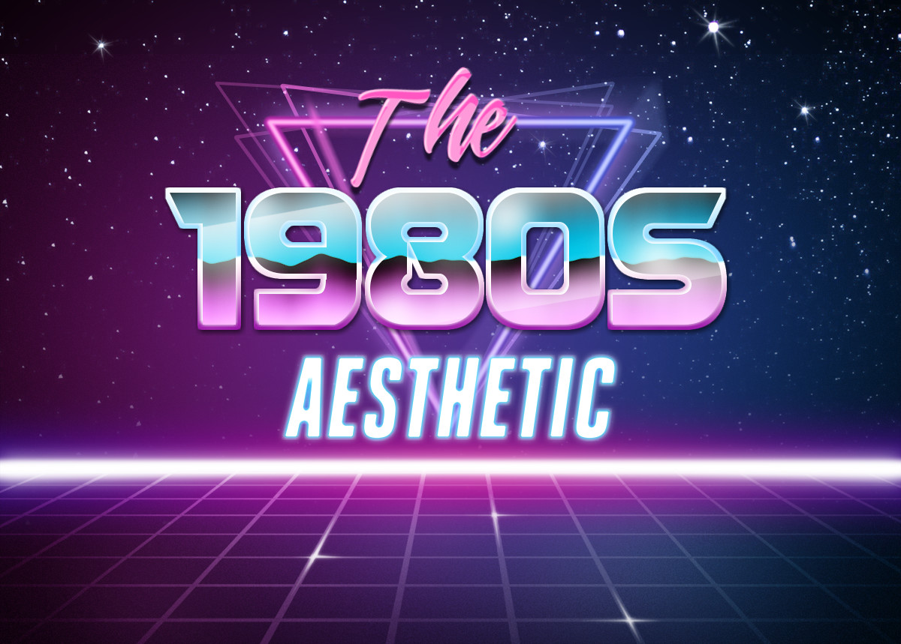

When you think of the Aesthetic of the 1980's, your mind likely draws back to the signature dark blues, pinks, and neon of the age. And you'd be right. This style was a huge buffer of the time and is often memed in the current age. The 8-bit graphics of games at the time were also popularized.